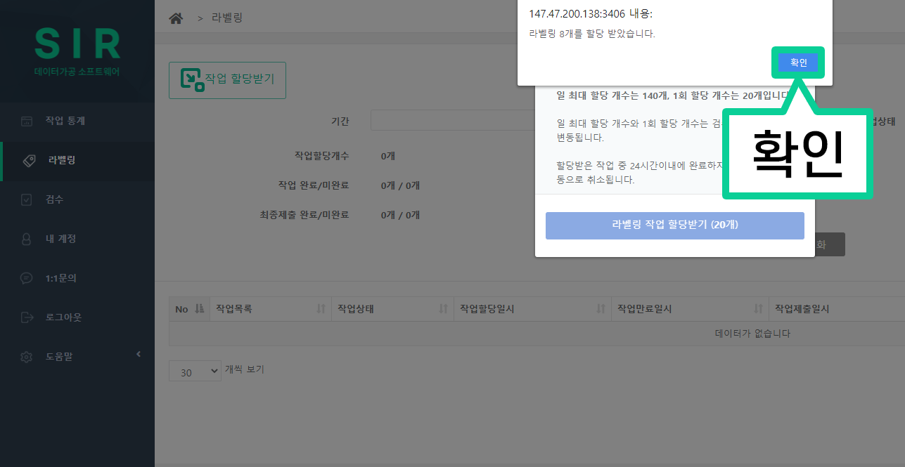

프로젝트 참여 방법
1. https://aiis.snu.ac.kr/sir/ 로 접속합니다.
2. 전달 받으신 ‘아이디’와 ‘비밀번호’를 입력하고 로그인을 합니다.
3-1. 처음 로그인하면 다음과 같이 ‘약관 동의’ 와 관련된 창이 뜹니다.
3-2. ‘모두 동의’ 를 클릭하고 ‘완료’ 버튼을 클릭하여 시작합니다.

3-3. ‘완료’ 버튼을 클릭하면 아래 사진과 같이 ‘계정 정보가 변경되었습니다.’ 라는 메시지가 뜨는데 ‘확인’ 을 눌러줍니다.
4-1. 라벨러는 ‘라벨링’ 버튼을 클릭하여 프로젝트에 참여합니다.
4-2. 검수자는 ‘검수’ 버튼을 클릭하여 프로젝트에 참여합니다.
5. ‘작업 할당받기’ 버튼을 클릭합니다.
* 라벨러 참고 이미지
* 검수자 참고 이미지

6. 아래 사진과 같은 ‘작업 할당받기’ 창이 뜨면 파란색으로 표시된 ‘작업 할당받기’ 버튼을 클릭합니다.
* 라벨러 참고 이미지

* 검수자 참고 이미지

7. ‘할당 받으시겠습니까?’ 라는 메시지가 뜨면 ‘확인’ 버튼을 클릭합니다.
* 라벨러 참고 이미지

* 검수자 참고 이미지
8. 아래 사진과 같이 할당 받았다는 메시지가 뜨면 ‘확인’ 버튼을 클릭합니다.
* 라벨러 참고 이미지
* 검수자 참고 이미지

9. 할당이 완료되면 다음과 같이 할당받은 작업 목록이 생성되고, 파란 글씨를 클릭하여 작업을 시작할 수 있습니다.
(자세한 작업 방법은 ‘라벨링 작업 방법 안내’ 및 ‘검수 작업 방법 안내’ 를 참고하세요.)
* 라벨러 참고 이미지
* 검수자 참고 이미지